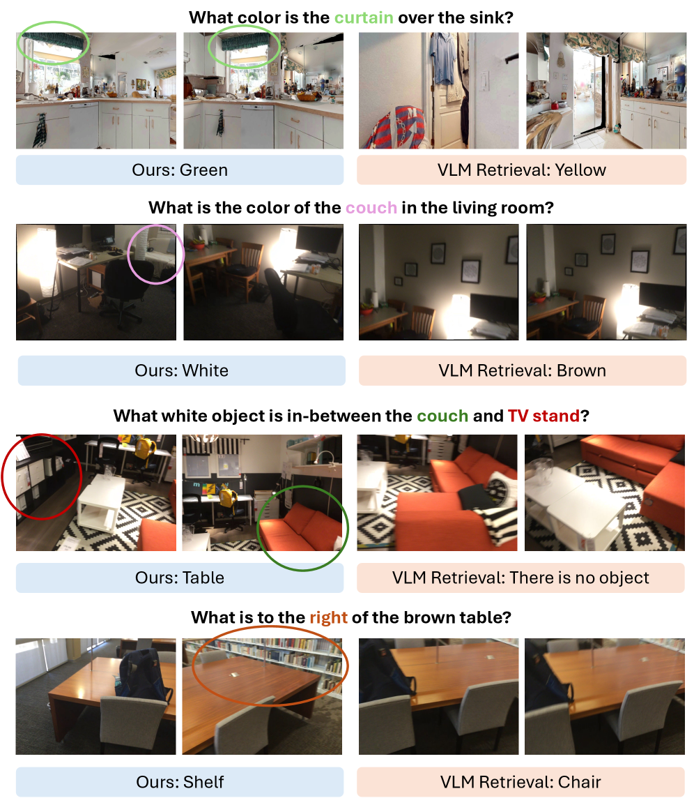

Figure 2 . Overall architecture of LiveHouse-TS, as an analogy in which models are performers and the benchmark is a live house . It contains three decoupled yet coordinated compon...
构建 living benchmark，以 prequential 协议在数据到达时先预测再更新评估，持续追踪真实未来表现。
阅读时需要把方法设计与主要结果一起看：横跨 11 个领域、17 个数据集的流式实验显示，静态排名在实时协议下会显著重排。
实验结果
横跨 11 个领域、17 个数据集的流式实验显示，静态排名在实时协议下会显著重排。
局限性
是评测基础设施，不直接解决真实 Δt、缺失模态或低延迟部署。
总结
对聚变模型最重要的启发是把跨时间、跨工况退化纳入发布门槛。
研究相关性与启发
按装置运行时间顺序做先预测后评估，记录模型排名、ECE、报警提前量和漂移检测触发点。
可控核聚变及 AI 交叉
可控核聚变及 AI 交叉
本轮空缺判断：直接聚变 AI 新增
英文原标题：*Empty slot for a directly relevant fusion-AI update*
Figure 1 : (a) The overall pipeline of DNBNet. (b) The debiased neural basis-function response computes debiased coefficients and basis masses using KDE and learnable basis functio...
【P1】原始应用为多变量概率预测；可迁移模块是从当前预测样本云估计局部协方差几何、动态回看窗口校准椭球半径；对应多诊断通道耦合、工况漂移和在线不确定性。包装器无需重训骨干，主要增加样本协方差与校准存储，显存开销随通道维度和样本数增长。风险是样本云低秩或误校准、突变工况让回看窗口滞后。最小验证实验：包装现有多通道预测器，比较独立区间、固定窗口 conformal 与 SPACE 的联合覆盖率、区间体积、报警 ECE、延迟和内存。
研究背景
由原简报的核心问题、选取理由和相关性整理，不替代原文背景综述。
逐通道区间忽略耦合结构，基于长历史残差的固定几何又会被旧工况污染，导致联合覆盖失真。
从本日报的选取理由看，【P1】原始应用为多变量概率预测；可迁移模块是从当前预测样本云估计局部协方差几何、动态回看窗口校准椭球半径；对应多诊断通道耦合、工况漂移和在线不确定性。包装器无需重训骨干，主要增加样本协方差与校准存储，显存开销随通道维度和样本数增长。风险是样本云低秩或误校准、突变工况让回看窗口滞后。最小验证实验：包装现有多通道预测器，比较独立区间、固定窗口 conformal 与 SPACE 的联合覆盖率、区间体积、报警 ECE、延迟和内存。
核心问题
如何利用当前预测分布的即时依赖结构，同时在线校准多变量联合覆盖？
对当前主题的关键意义在于：原始应用领域是多变量概率预测；可迁移模块是样本云局部协方差与动态窗口校准；对应待解决问题是异步诊断耦合、工况漂移与在线置信度。无需重训可控制训练成本，但样本与协方差计算会增加 CPU/GPU 内存、峰值显存和延迟。主要失效条件是低秩样本云、突变漂移和通道维数过高。最小验证实验：比较独立区间、固定 conformal 与 SPACE 的联合覆盖、区间体积、ECE、延迟和内存。
方法与关键创新
Figure 1 : Joint coverage at the 90% target. Panel (a) shows the distribution of empirical joint coverage. The x-axis evaluates different constructions: Raw Forecaster denotes nati...
Figure 1: Method Overview. (A) Spatiotemporal DCE Primitive Representation consists of a contrast basis and geometry basis, modeling the primitives intensity and the primitives sha...
Figure 9 : Ablation on fusion ratio and upsampling ratio. (a–c) Impact of the fusion weight α \alpha (spatial attention vs. temporal step-variance) on three models: FLUX.1-dev (Ima...
Memory Tree Guided Key Frame Querying for Efficient 3D Question Answering
2026-08-18recommend
【P4】原始应用为长视频具身 3D 问答；可迁移模块是实时在线构建的多层 3D memory tree 与查询相关关键帧评分；对应流式压缩、可复用记忆和避免每次查询重扫全部 token。树结构可降低重复视觉编码和查询延迟，但在线建树、位姿与节点缓存占内存。风险是位姿不可得、早期错误摘要导致关键瞬态不可恢复。最小实验：将诊断视频按时间/区域构建两级 memory tree，对破裂、属性和异常查询选帧，比较均匀采样、最近帧、全量搜索与 MemTree 的关键事件召回、AUC、峰值显存和 P95 延迟。
作者 / 机构
Hsiang-Wei Huang, Fu-Chen Chen, Li-Wu Tsao, Cheng-Han Lee, Che-Chun Su, Lu Xia, Ronghui Peng, Jenq-Neng Hwang, Min Sun, Cheng-Hao Kuo
【P4】原始应用为长视频具身 3D 问答；可迁移模块是实时在线构建的多层 3D memory tree 与查询相关关键帧评分；对应流式压缩、可复用记忆和避免每次查询重扫全部 token。树结构可降低重复视觉编码和查询延迟，但在线建树、位姿与节点缓存占内存。风险是位姿不可得、早期错误摘要导致关键瞬态不可恢复。最小实验：将诊断视频按时间/区域构建两级 memory tree，对破裂、属性和异常查询选帧，比较均匀采样、最近帧、全量搜索与 MemTree 的关键事件召回、AUC、峰值显存和 P95 延迟。
研究背景
由原简报的核心问题、选取理由和相关性整理，不替代原文背景综述。
每个新查询都在数千帧中重新做视觉搜索，重复计算大且无法复用；简单固定关键帧又不能适应查询变化。
从本日报的选取理由看，【P4】原始应用为长视频具身 3D 问答；可迁移模块是实时在线构建的多层 3D memory tree 与查询相关关键帧评分；对应流式压缩、可复用记忆和避免每次查询重扫全部 token。树结构可降低重复视觉编码和查询延迟，但在线建树、位姿与节点缓存占内存。风险是位姿不可得、早期错误摘要导致关键瞬态不可恢复。最小实验：将诊断视频按时间/区域构建两级 memory tree，对破裂、属性和异常查询选帧，比较均匀采样、最近帧、全量搜索与 MemTree 的关键事件召回、AUC、峰值显存和 P95 延迟。
核心问题
能否先在线构建紧凑可复用场景记忆，再按查询选择关键帧而不重处理全视频？
对当前主题的关键意义在于：原始应用领域是具身 3D 问答；可迁移模块是在线多层记忆与查询关键帧检索；对应待解决问题是长序列重复处理和查询条件预算。可减少重编码与查询延迟，但树和缓存增加常驻内存。主要失效条件是无可靠位姿、摘要误差和瞬态证据被上层聚合。最小验证实验：比较均匀采样、全量搜索与两级 MemTree 的关键事件召回、AUC、显存和延迟。
方法与关键创新

Figure 10 : Additional qualitative results comparison between our MemTree3D framework and VLM retrieval baseline. We showcase several cases, including 1. VLM fails to retrieve any ...
原始应用领域是具身 3D 问答；可迁移模块是在线多层记忆与查询关键帧检索；对应待解决问题是长序列重复处理和查询条件预算。可减少重编码与查询延迟，但树和缓存增加常驻内存。主要失效条件是无可靠位姿、摘要误差和瞬态证据被上层聚合。最小验证实验：比较均匀采样、全量搜索与两级 MemTree 的关键事件召回、AUC、显存和延迟。
多模态学习 / 图像 / 计算机视觉
01
多模态学习 / 图像 / 计算机视觉
Hydra-0：Action Flow 作为跨本体共享接口
Hydra-0: Action Flow for Generalist World Modeling and Control
Figure 1 : Overview of Hydra-0. During offline training (top) , we recover action flow from interaction videos by tracking both the embodiment and the manipulated object , as detai...
Figure 1 : Motivation of the proposed method. (a) and (b) compare the standard high-resolution image editing paradigm with our approach. (c) analyzes the inherent limitations of ex...
![Figure 2 . Overall architecture of LiveHouse-TS, as an analogy in which models are performers and the benchmark is a live house . It contains three decoupled yet coordinated components: OPEN i ) i) a Model Entrance that “checks tickets” and standardizes heterogeneous forecasters before they take the stage; OPEN i i ) ii) Live Data that turns public streams into a rolling set of forecasting tasks according to the dataset description (e.g., frequency, context length, and forecast horizon); and OPEN i i i ) iii) an Evaluation House (the live house) that enforces the future-only rule, and updates the leaderboard.](../assets/figures/4b92cb278e789c0f.png)
![Figure 1 : Joint coverage at the 90% target. Panel (a) shows the distribution of empirical joint coverage. The x-axis evaluates different constructions: Raw Forecaster denotes native sample-based regions without conformal calibration, Space is our method, and the rest are competing conformal baselines. The y-axis shows empirical joint coverage, with the dotted line marking the 90% target; better methods concentrate near this line. Panel (b) shows rolling joint coverage on the weather dataset across forecasters. Raw rolling coverage (gray) is unstable and systematically off-target, whereas Space (red) stays much closer to the desired level over time.](../assets/figures/b3fe667fd227b48e.png)
![Figure 9 : Ablation on fusion ratio and upsampling ratio. (a–c) Impact of the fusion weight α \alpha (spatial attention vs. temporal step-variance) on three models: FLUX.1-dev (ImageReward), Qwen-Image-Edit (Overall score), and FLUX.1-Kontext-dev (Overall score). α = 0 \alpha{=}0 uses only step-variance, α = 1 \alpha{=}1 uses only attention. AViTS remains strong across a wide range of α \alpha and outperforms TaylorSeer at comparable speedups (shown in legends), indicating complementarity between semantic alignment and cross-step dynamics. (d) Speed–quality trade-off on FLUX.1-dev by varying the upsampling ratio ρ \rho : increasing ρ \rho improves ImageReward but reduces latency speedup, revealing a clear Pareto frontier for selecting the high-resolution budget.](../assets/figures/eddf61ac7d0b3ace.png)
![Figure 1 : Overview of Hydra-0. During offline training (top) , we recover action flow from interaction videos by tracking both the embodiment and the manipulated object , as detailed in Section 2.1 . The future video is encoded to construct the flow-matching training target. During online deployment (bottom) , Isaac Lab executes a candidate command sequence 𝐚 0 : H − 1 \mathbf{a}_{0:H-1} through the robot controller and physics simulation, producing robot link transforms over the prediction horizon. Using these transforms, we propagate visible robot-surface points and project them through the calibrated camera following Equation 1 , producing embodiment action flow that conditions the causal autoregressive model to predict the command sequence’s real-world consequence.](../assets/figures/0a6d7c68f0efc905.png)